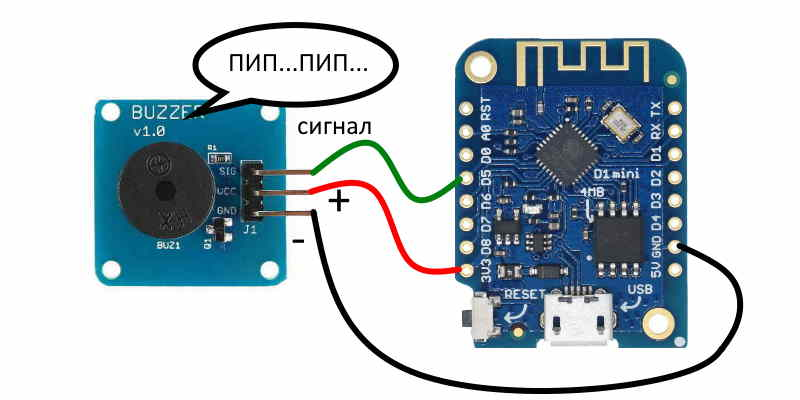
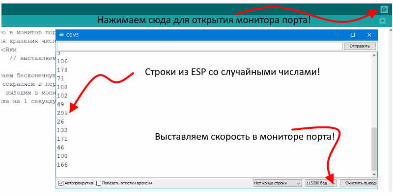
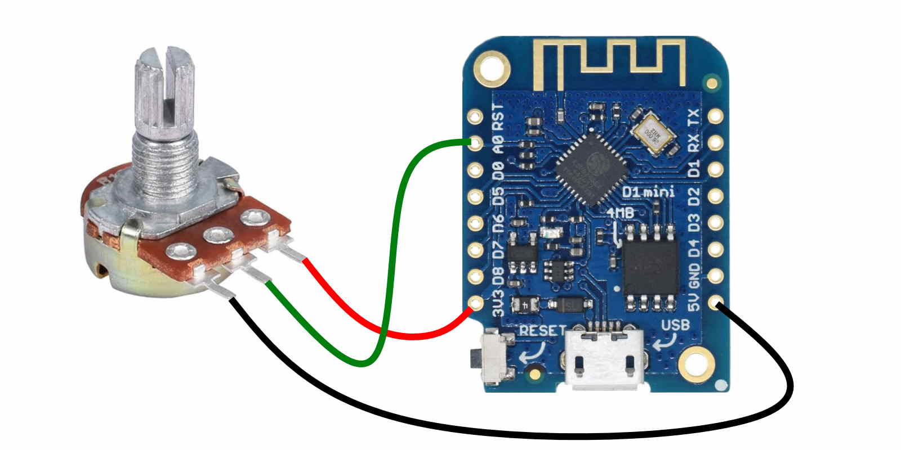
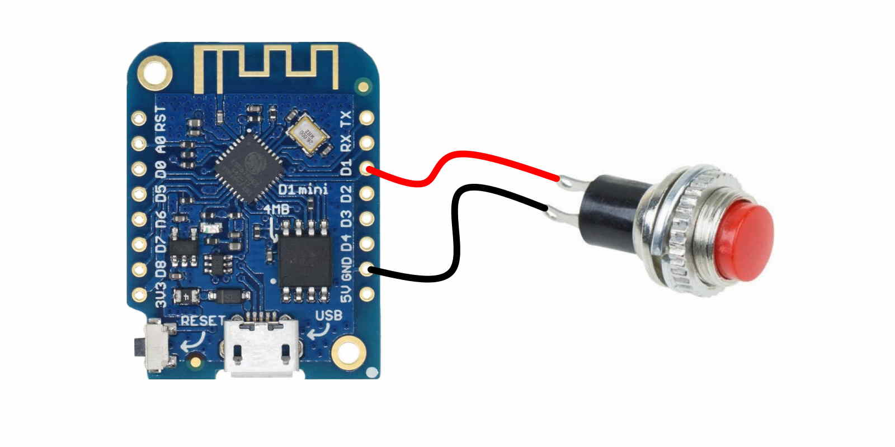

Здесь расположены небольшие скетчи (прошивки) для esp8266 для быстрой проверки различных плат и пр.
Здесь расположены небольшие скетчи (прошивки) для esp8266 для быстрой проверки различных плат и пр.
Популярный Blink для могргания светодиодом встроенным в плату, некоторые считают что моргание нечто примитивное, но как вам такое весь интернет это могание светодиодом, предача 0 и 1 !
void setup() { // функция настроек и разового ввода данных
pinMode(2, OUTPUT); // инициализация контакта Wemos D1 Mini светодиод на GPIO2 (D4)
}
void loop() { // Функция бесконечного цикла
digitalWrite(2, 1); // светодиод загорается
delay(1000); // ожидание в течение 1 секунды
digitalWrite(2, 0); // светодиод гаснет
delay(500); // ожидание в течение 500 милисекунд (пол секунды)
}

Подключаем пищалку к есп, подключение очень простое как и скетч , обязательно в скетче поменяйте частоту чтоб почуствовать что зуммер стал звучать по другому!
void setup () { // функция настроек и разового ввода данных
pinMode(14, OUTPUT); // 14 это Д 5 пин на вемос мини, OUTPUT это настройка ны выход сигнала
}
void loop () { // запускаем бесконечный цикл
tone(14, 1000, 1000); // пищим на Д 5 пине ,частота сигнала в Герцах ,длительность сигнала в миллисекундах
delay (2000); // задержка на 2 секунды
}

Давайте используем монитор порта нечего ему прохлаждатся. Монитор порта очень хорошая штука так как позволяет видеть что в данный момент происходит в программе внутри микроконтроллера, поэтому часто используется не только для вывода различной информации но и для поиска проблемм в прошивке. В этом примере для большего интереса мы выводим не просто какуюто букву или цифру, а выводим случайное число которое микроконтроллер выбирает по своему желанию. Так же у нас есть переменная представим ее как кружку для воды она задается вверху скетча - "byte n". Потом мы используем только название "n" , вначале работы программы в "n = random(1, 250);" мы помещаем некоторое количество воды в нашу кружку и это количество выводим в монитор порта вот тут - "Serial.println (n);" , далее цикл повторяется бесконечно. Не забываем выставить скорость в мониторе порта как показано на рисунке иначе будут кракозяблы типа №№"№;№№"??? скорость надо выставлять такую как указано в "Serial.begin (115200);". Функция случайного числа не такая уж и бесполезная как кажется на первый взгляд , например когда будете работать с светодиодной лентой то можете создавать интересные эффекты которые меняются случайным образом.
byte n; // переменная для хранения числа 0 - 250
void setup() { // настройки
Serial.begin (115200); // выставляем скорость на порту
}
void loop() { // запускаем бесконечную обработку кода (цикл)
n = random(1, 250); //сохраняем в переменную случайное число от 1 до 250
Serial.println (n); // выводим в монитор порта число и переводим строку
delay(1000); // задержка на 1 секунду
}

Разбираемся с аналоговым входом ЕСП8266. К сожалению на плате только один аналоговый вход, но в принципе этого хватит для многих интересных применений. Аналоговый вход принимает 3.3 вольта максимум так что будте осторожны не подключите больше иначе сгорит. Принимаемые 3.3 вольта делятся внутри микроконтроллера на 1024 части и в виде числа выводятся для нас, далее мы можем использовать их например привязать к напряжению и измерять его, на этом построены вольтметы, осцилографы и прочее, так же мы можем измерять сопротивление например аналогового датчика температуры и при определенном значении что то включать или выключать например обогреватель или вентилятор, так же мы можем повесить на аналоговый вход хоть 20 кнопок которые будут через резисторы сообщать напряжение и мы при определенном значении можем что либо включать, применить это можно в автомобиле для кнопок руля куда через гибкий шлейф руля приходит мало проводов. На схеме к аналоговому пину подключен регулируемый резистор на 10 килоом и при его вращении меняются цифры в мониторе порта.
int value = 0; // переменная для хранения значения с аналогового входа
void setup() { // функция настроек и разового ввода данных
Serial.begin(115200); // выставляем скорость на мониторе порта
}
void loop() { // запускаем бесконечный цикл
value = analogRead(A0); // читаем аналоговый порт и сохраняем в пременную
Serial.println(value); // выводим в монитор порта число из переменной и переводим строку
delay(2000); // задержка на 2 секунды
}

Подключаем кнопку к ЕСП. Кнопки очень важный элемент в схеме с помощью их включаются и выключаются различные компоненты в схеме, так же подключение кнопки в этом примере расскажет как отловить замыкание на ноль в программе микроконтроллера что может пригодится для распознавания отработки конечных выключателей и прочего. Кнопка в данной схеме будет подавать ноль на пин д1 на котором мы настроили внутри контроллера подачу +3.3 вольта но при нажатии короткого замыкания не произойдет так как сила тока приходящая на этот пин очень маленькая. После загрузки нашей прошивки в микроконтроллер он будет ждать постоянно опрашивая нашу кнопку через пин и как только увидит что кнопка нажата, это он узнает по падению напряжения, то выполнит команду. На плате после включения у нас горит светодиод, у wemos d1 мини он инвертирующий то есть для его тушения надо подать плюс, далее если команда с кнопки пришла, микроконтроллер подает питание на пин д4 и светодиод тухнет, через три секунды светодиод загорается вновь так как питание у нас с пина д4 убирается.
void setup() { // функция настроек и разового ввода данных
pinMode(D1, INPUT_PULLUP); // настраиваем на вход D1 пин и подаем внутри контроллера на него + 3.3 вольта
pinMode(D4, OUTPUT); // настраиваем на выход D4 пин с подключенным светодиодом
}
void loop() { // Функция бесконечного цикла
if (!digitalRead(D1)) { // ждем сигнала с кнопки и если - if (будет обнулен (наш пин D1)) то выполняем действия в скобке
digitalWrite(D4, 1); // на пине D4 появляется +3.3 вольта, светодиод гаснет
delay(3000); // ожидание в течение трех секунд
digitalWrite(D4, 0); // на пине D4 появляется 0 вольт, светодиод загорится
} // действия в скобке после if будут идти до сюда
}
